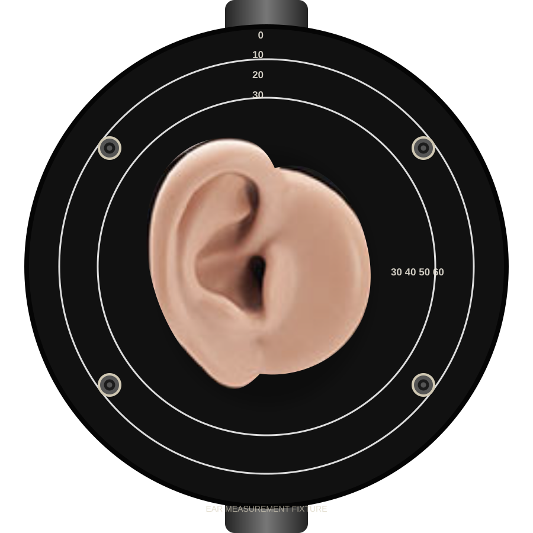

Headphone positional capture & visualisation
Capture the same headphone at a centred seating and at controlled forward, backward, up, and down offsets. The graph shows how much of the measured response depends on the listener–headphone geometry, rather than treating one fixture position as universal.
1. Audio input / output
Audio devices have not been scanned.
The automatic suggestion prefers names containing Cosmos, ADC, GRAS, B&K, measurement, or USB-C for the input, and an external DAC/headphone output for playback. You can override it.
2. Capture and rendering options
The built-in matched sweep still deconvolves without it; the lead-in makes the capture timing more robust.
No calibration loaded
3. Target and preference bounds
No target loaded
4. Positional workflow
Keep the fixture, signal level, and headphone seal unchanged. For each offset, move the headphone only in the indicated direction, then let it settle before capturing. Center is averaged when the selected repeat count is complete.

Positional response
Drag to pan · double-click resets
5. Export
- REW export writes one text file per captured position, zipped together — REW imports one measurement per file (File › Import › Import frequency response). A single capture downloads as a plain .txt.
- The project JSON keeps the raw response metadata, calibration name, target, and capture settings for later analysis.